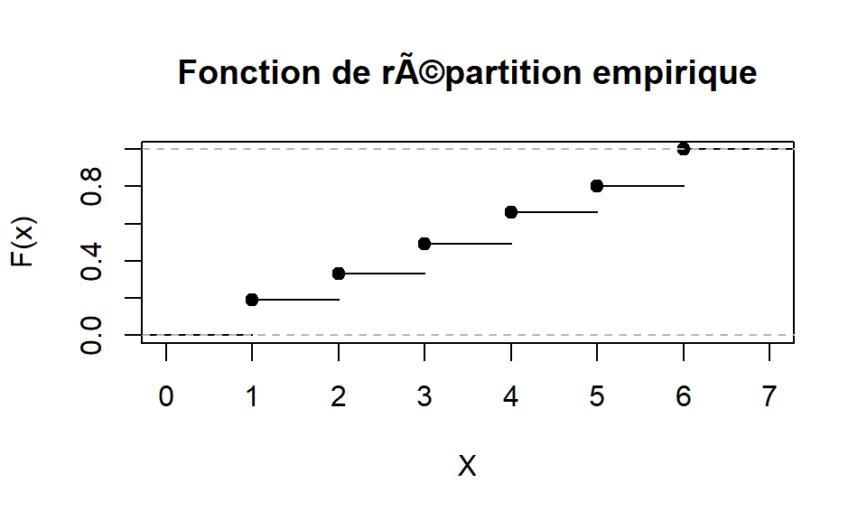
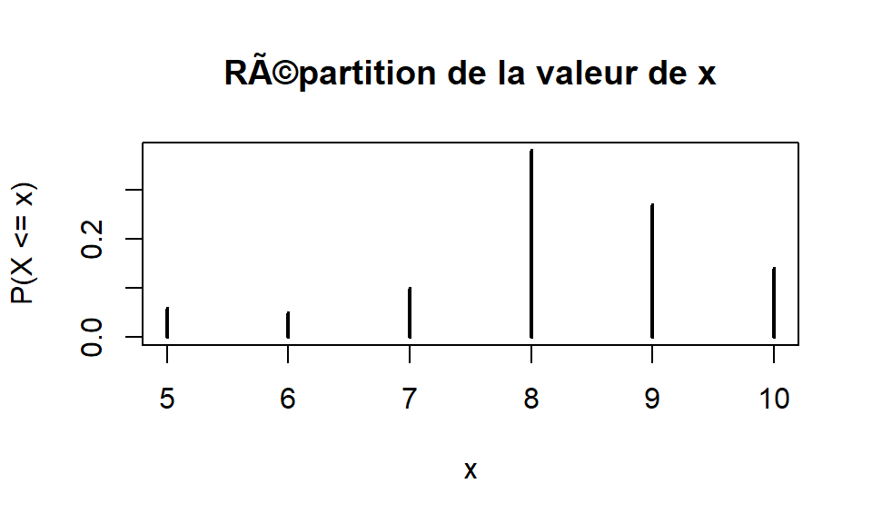
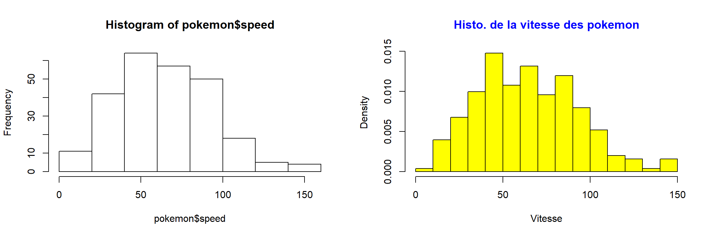
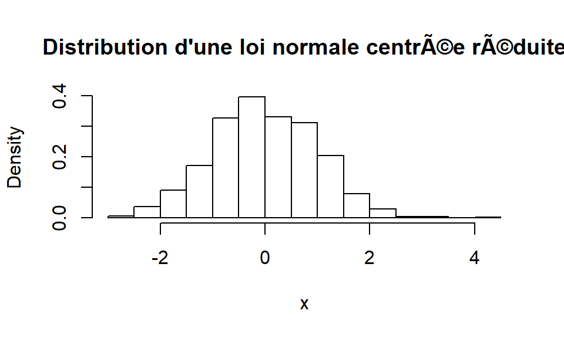
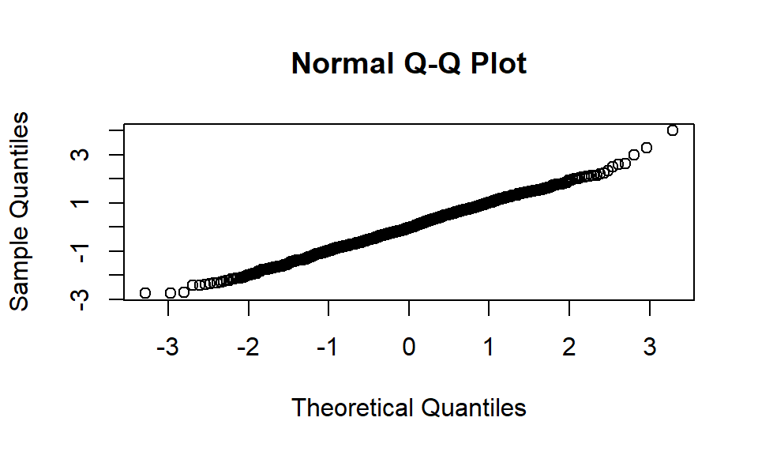
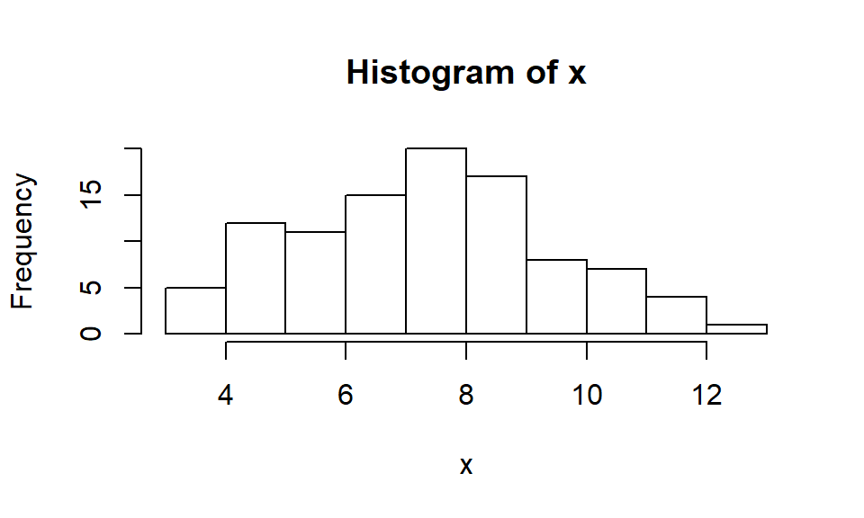
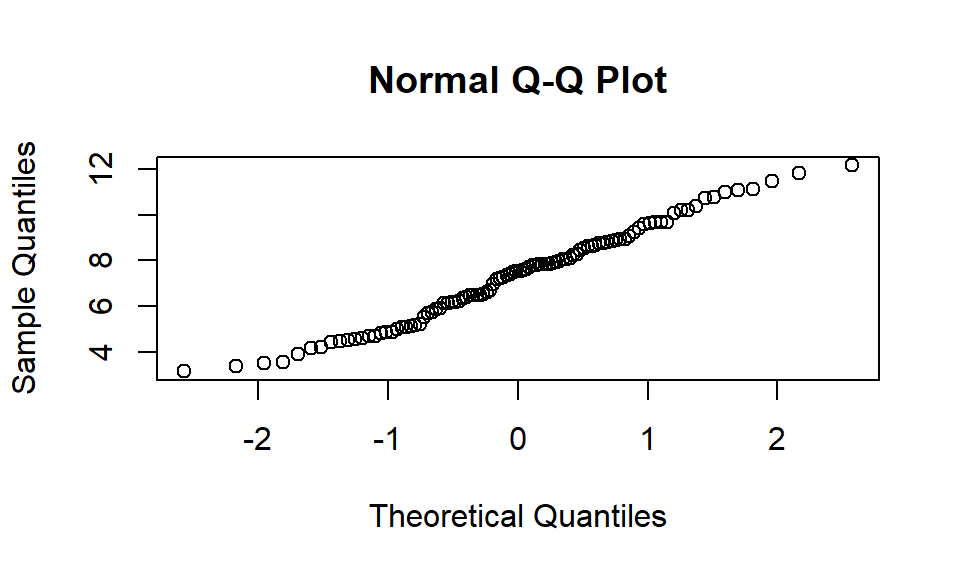

Chapter 7 Fonctions statistiques
Certaines notions de ce TP sont extraites du cours de Christophe Chesneau “Introduction aux lois de probabilité avec R” (https://cel.archives-ouvertes.fr/cel-01389942/document)
On appelle fonction de répartition de X la fonction F(x) donnant pour toute valeur X choisie la probabilité que la variable aléatoire X soit inférieure ou égale à X. Ce qui peut s’écrire : F(x) = P(X <= x) (où P signifie probabilité). La fonction densité f(x) est la dérivé de la fonction de répartition F(x).
La loi de probabilité d’une variable aléatoire est définit par : Sa fonction densité notée f(x) où la surface sous la courbe est égale à 1 Sa fonction de répartition F(x) qui est croissante de 0 à 1
Pour une variable aléatoire X suivant une loi notée loi dans R, la syntaxe générale est la suivante :
- pour obtenir la densité de X, la commande est : d
loi - pour obtenir la fonction de répartition de X, la commande est : p
loi - pour obtenir le quantile de X, la commande est : q
loi - pour simuler des réalisations de X suivant la même loi que X, la commande est : r
loi
7.1 Lois de probabilités discrètes
Une variable qui ne prend qu’un nombre dénombrable de valeurs est dite discrète, sinon continue. La loi d’une variable aléatoire discrète X est la liste de toutes les valeurs différentes que peut prendre X avec les probabilités qui lui sont associées.
7.1.1 Loi uniforme discrète
Lorsqu’on ne connait pas les probabilités de chaque issues d’une variable aléatoire, On associe à toutes les issues la même probabilité noté 1/n. Les fonctions associées à la loi runif simule une loi uniforme continue. On va donc utiliser la fonction sample de R pour générer un échantillon d’une loi uniforme discrète. La fonction ecdf permet de représenter graphiquement la fonction de répartition empirique
Voici une simulation dans R de 100 réalisations d’un lancé de dé qui est une expérience aléatoire qui suit une loi uniforme :
Fx <- ecdf(x)
plot(Fx, xlab = "X",
ylab = "F(x)", ylim = c(0,1),
main = "Fonction de répartition empirique")
7.1.2 Loi binomiale
Une épreuve de Bernoulli est une expérience aléatoire qui n’a que deux issues possibles : succès ou échec prenant la valeur 1 en cas de succès et 0 en cas d’échec.
Une loi binomiale correspond au nombre de succès obtenus lors de n épreuves de Bernoulli. Les fonctions binom permettent de simuler une loi binomiale dans R.
Voici une simulation dans R de 100 réalisations d’une variable aléatoire suivant une loi Binomiale de 10 épreuves de Bernoulli avec comme probabilité du succès 0.8 :
#Simulation de 100 réalisations d'une loi Binomiale de 10 épreuves de Bernoulli
x <- rbinom(100, size=10, prob=0.8)
#On effectue un tri à plat en pourcentage des valeurs de X
freq_X <- prop.table(table(x))
#On construit un diagramme en bâton
plot(freq_X, xlab = "x", ylab = "P(X <= x)",
main = "Répartition de la valeur de x")
On compare les statistiques de la simulation aux valeurs de la loi théorique. D’après la loi des grands nombres, plus le nombre de réalisation est grand, plus les caractéristiques de l’échantillon se rapprocheront de celles de la loi théorique.
Quelle est la probabilité de réaliser 8 succès ou moins sur les 10 tentatives ?
## [1] 0.6241904## 5 6 7 8 9 10
## 0.06 0.11 0.21 0.59 0.86 1.00Quelle est la valeur de x telle que P(X <= x) = 0.62 ?
## [1] 8## 5 6 7 8 9 10
## 0.06 0.11 0.21 0.59 0.86 1.007.1.3 Loi de poisson
La loi de Poisson est une loi de probabilité discrète qui décrit le comportement du nombre d’événements se produisant dans un intervalle de temps fixé. Elle admet un paramètre appelé lambda. Par exemple, si un certain type d’événements se produit en moyenne 4 fois par minute, pour étudier le nombre d’événements se produisant dans un laps de temps de 10 minutes, on choisit un lambda de 10×4 = 40.
Dans cet exemple, on effectue 1000 réalisations d’une loi de Poisson avec un lambda = 2
#On effectue un tri à plat en pourcentage des valeurs de X
freq_X <- prop.table(table(x))
#On construit un diagramme en bâton
plot(freq_X, xlab = "x", ylab = "P(X <= x)",
main = "Répartition de la valeur de x")
On compare les statistiques de la simulation aux valeurs de la loi théorique. D’après la loi des grands nombres, plus le nombre de réalisation est grand, plus les caractéristiques de l’échantillon se rapprocheront de celles de la loi théorique.
Quelle est la probabilité que l’évènement se produit 2 fois ou moins ?
## [1] 0.6766764## 0 1 2 3 4 5 6 7
## 0.151 0.418 0.674 0.843 0.940 0.991 0.996 1.000Quelle est le nombre d’évènements maximums qui peuvent se produire tel que P(X <= x) = 0.67 ?
## [1] 27.2 Lois de probabilités continues
Une variable aléatoire qui peut prendre comme valeurs tous les nombres réels d’un certain intervalle est dite continue. On représente une variable aléatoire continue en regroupant ses valeurs dans un histogramme.
7.2.1 Loi uniforme continue
La loi uniforme sur un intervalle indique, intuitivement, que toutes les valeurs de l’intervalle ont les mêmes chances d’apparaître.
Voici un exemple dans R avec l’issue de 1000 réalisations d’une loi uniforme sur l’intervalle [0 ; 10]
x <- runif(1000,min=0, max=10)
hist(x, main="Distribution d'une loi uniforme",
probability = TRUE, ylim = c(0,0.15))
Quelle est la probabilité que x soit inférieur ou égale à 8 (P(X <= 8)) ?
## [1] 0.8Quelle est la valeur de x pour que la probabilité P(X <= x) = 0.8 ?
## [1] 8La fonction dunif retourne la densité de probabilité de la variable aléatoire qui suit une loi uniforme. C’est cette valeur qu’on retrouve sur l’histogramme ci-dessus.
## [1] 0.1 0.1 0.1 0.1 0.1 0.1 0.1 0.1 0.1 0.1 0.17.2.2 Loi normale
La loi normale est l’une des lois de probabilité les plus adaptées pour modéliser des phénomènes naturels issus de plusieurs événements aléatoires. Elle est également appelée loi gaussienne.
C’est une loi de probabilité continue qui dépend de deux paramètres : son espérance, son écart type.
Voici un exemple dans R avec l’issue de 1000 réalisations d’une loi normale sur l’intervalle avec µ = 5 et sigma = 2
x <- rnorm(n = 1000,mean = 5,sd = 2)
hist(x, main="Distribution d'une loi normale",
probability = TRUE)
On parle de loi normale centrée réduite lorsque µ = 0 et sigma = 1
x <- rnorm(n = 1000,mean = 0,sd = 1)
hist(x, main="Distribution d'une loi normale centrée réduite",
probability = TRUE)
On compare les statistiques de la simulation aux valeurs de la loi théorique. D’après la loi des grands nombres, plus le nombre de réalisation est grand, plus les caractéristiques de l’échantillon se rapprocheront de celles de la loi théorique.
Quelle est la probabilité que x soit inférieur ou égale à 1.96 (P(X <= 1.69)) ?
## [1] 0.9750021Quelle est la valeur de x pour que la probabilité P(X <= x) = 0.975 ?
## [1] 1.959964La fonction dnorm renvoie la valeur de la fonction de densité de probabilité pour x = 0 qu’on retrouve dans l’histogramme ci-dessus.
## [1] 0.3989423Le qqplot ou tracé quantile-quantile, est une représentation graphique permettant d’évaluer si un ensemble de données suit une distribution théorique telle qu’une normale.

7.3 Récapitulatif
| Loi | Appellation R | Arguments |
|---|---|---|
| Uniforme | unif | min, max |
| Binomiale | binom | size, prob |
| Poisson | pois | lambda |
| Normale | norm | mean, sd |
| Student | t | df (degrés de liberté) |
| Fisher | f | df1, df2 |
| Chi deux | chisq | df (degrés de liberté) |
| … | … | … |
7.4 Exercice
7.4.1 Sujet
Simulez 100 expériences aléatoires où la variable aléatoire suit une loi normale avec µ = 7 et sigma = 2
Représentez la distribution de cette simulation dans un histogramme
Quelle est la probabilité que la valeur de x soit inférieure ou égale à 9 (P(X) <= 9)
Quelle est la probabilité que la valeur de x soit strictement supérieure 9 (P(X) > 9)
Construisez un Q-Q plot
7.4.2 Correction
- Simulez 100 expériences aléatoires où la variable aléatoire suit une loi normale avec µ = 7 et sigma = 2
- Représentez la distribution de cette simulation dans un histogramme

- Quelle est la probabilité que la valeur de x soit inférieure ou égale à 9 (P(X) <= 9)
## [1] 0.8413447- Quelle est la probabilité que la valeur de x soit strictement supérieure 9 (P(X) > 9)
## [1] 0.1586553- Construisez un Q-Q plot
